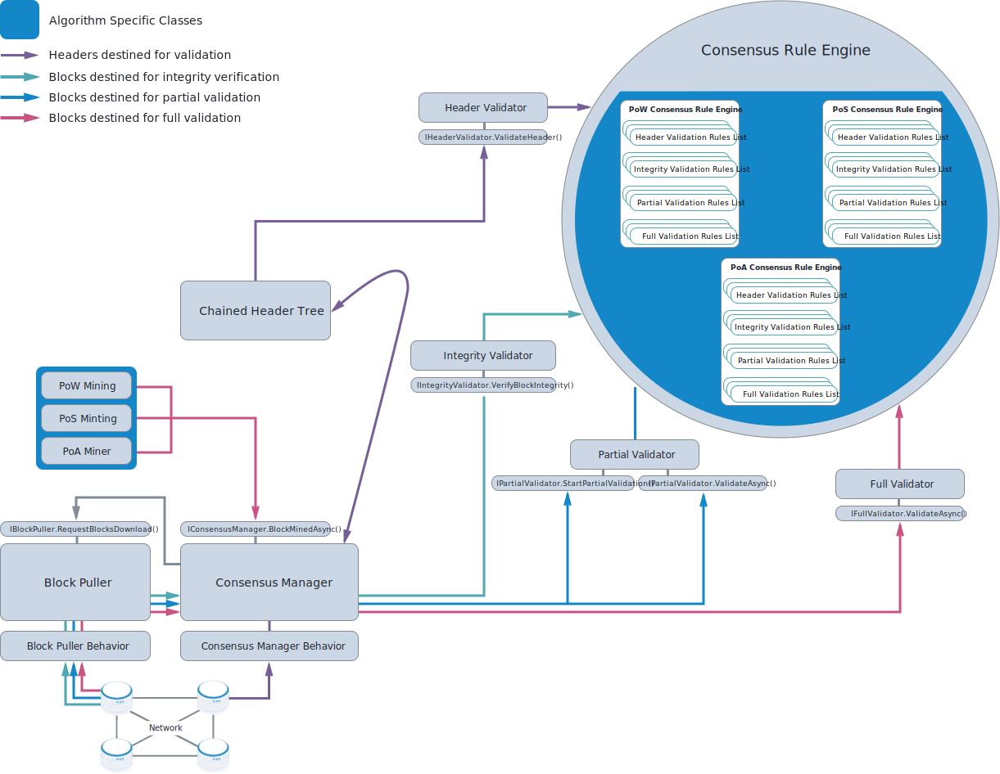

Consensus architecture¶
The following figure shows the components that make up the consensus architecture. The components within blue shapes are algorithm specific, which is to say that they are added to a Full Node build depending on the consensus algorithm/s the build needs to support.
{kind=link}
The Consensus Manager, which is a ConsensusManager singleton, is the central part of the consensus architecture and implements the IConsensusManager interface. It interacts closely with the Chained Header Tree (a ChainedHeaderTree singleton). The Consensus Manager receives headers via the Consensus Behavior Manager and these are forwarded to the Chained Header Tree. The Chained Header Tree decides which of the headers are interesting and requests the Consensus Manager retrieves the headers’ blocks. The Block Puller is responsible for handling the block retrieval from the network.
Note
The decisions on what level block validation needs to go to are taken by the Consensus Manager, which may rely on feedback from the Chained Header Tree. When looking at the routes taken by blocks on their way to validation, be aware that blocks undergoing full validation will have passed at least partial validation first. Blocks that are required to undergo only partial validation will have passed integrity verification.
The ConsensusRulesEngine is an abstract class that the algorithm-specific PowConsensusRulesEngine, PosConsensusRulesEngine, and PoAConsensusRulesEngine classes inherit from. Each ConsensusRulesEngine object contains a list of rules for the four types of validation. The Consensus Manager does not interact directly with the instances of PowConsensusRulesEngine, PosConsensusRulesEngine, and PoAConsensusRulesEngine which are created. Instead, the Consensus Manager calls into three wrapper class singletons: IntegrityValidator, Partial Validator, and the FullValidator. These lean objects provide, internally, a logging facility and implement the IIntegrityValidator, IPartialValidator, and IFullValidator interfaces respectively. Except for IPartialValidator, each of these singletons implements a single method, and it is these methods the Consensus Manager calls.
The Chained Header Tree follows the same pattern and interacts with the required header validation rules list via a HeaderValidator wrapper singleton, which implements the IHeaderValidation interface.
The table below provides links to the source files in which the C# classes and related interfaces (were relevant) for these components can be found:
Component |
C# Class |
C# Interface |
|---|---|---|
PoW Mining |
||
PoS Minting |
||
PoA Miner |
||
Chained Header Tree |
||
Consensus Manager |
||
Consensus Manager Behavior |
N/A |
|
Header Validator |
||
Integrity Validator |
||
Partial Validator |
||
Full Validator |
||
Consensus Rule Engine |
||
PoW Consensus Rule Engine |
N/A |
|
PoS Consensus Rule Engine |
N/A |
|
PoA Consensus Rule Engine |
N/A |
|
Block Puller |
||
Block Puller Behavior |
N/A |
When does the Consensus Manager request block validation?¶
Let’s look in the code at the situations which require that the Consensus Manager performs validation:
PoW Mining, PoS Minting, and PoA Miner singletons call into the Consensus Manager, via the
ConsensusManager.BlockMinedAsync()method, when a new block is created. CallingBlockMinedAsync()results in the new block undergoing both partial and full validation. As older blocks mined prior to the last checkpoint do not require full validation, partial validation includes a check to see if a block requires full validation. However, if a supposedly new block does not require full validation, something has gone wrong, and an error is raised.The Consensus Manager holds a reference to the Block Puller component. When the Consensus Manager is initialized, it supplies
ConsensusManager.BlockDownloaded()to the Block Puller as a callback. TheConsensusManager.HeadersPresented()method is used to request that the Consensus Manager initiates block downloading for a set of block headers. The request is forwarded to the Block Puller. Each block retrieved from the network by the Block Puller is pushed into the ConsensusManager via the suppliedBlockDownloaded()callback. In this callback, the integrity of the downloaded block is verified with a call toIntegrityValidator.VerifyBlockIntegrity(). All requests to the Block Puller are made via the ConsensusManager.Within
ConsensusManager.HeadersPresented()is a call to the private functionConsensusManager.DownloadBlocks(), which takes a callback function as its second parameter. In the call toDownloadBlocks(),ConsensusManager.ProcessDownloadedBlock()is supplied as the callback and is held in theConsensusManager.callbacksByBlocksRequestedHashdictionary.ProcessDownloadedBlock()ultimately gets retrieved from the dictionary and called inConsensusManager.BlockDownloaded(), and here it matches up a downloaded block with the block’s chained header in the Chained Header Tree. This is achieved via a call toChainedHeaderTree.BlockDataDownloaded(), which returnstrueif the downloaded block requires partial validation and false if it does not. If partial validation is required, a call is made toPartialValidator.StartPartialValidation(). If partial validation succeeds at this point, full validation may be required.The decision to proceed with full validation is made by the Chained Header Tree. Specifically, this occurs when
ChainedHeaderTree.PartialValidationSucceeded()is called at two points in the Consensus Manager code: withinBlockMinedAsync()and withinConsensusManager.OnPartialValidationSucceededAsync(), which is called from the callback passed toPartialValidator.StartPartialValidation(). Importantly,PartialValidationSucceeded()has anoutparameter which returns whether full validation is required. It decides this by checking if the block has more chainwork than the current consensus tip. If this is the case, the new block will become the consensus tip if it passes full validation.
Note
The Chained Header Tree component does not hold a reference to the Consensus Manager. Communication with the Consensus Manager occurs when it calls the IChainedHeaderTree interface, and the Chain Header Tree’s response is either by return values or out parameters. Therefore, the communication can be thought of as two-way.
When does the Chained Header Tree request header validation?¶
The Chained Header Tree tries to create a new chained header (an instance of ChainedHeader) each time it receives a header (an instance of BlockHeader). Straight after the new chained header is created, it is validated with a call to HeaderValidator.ValidateHeader(). The creation of the new chained header takes place in ChainedHeaderTree.CreateAndValidateNewChainedHeader(), and this private function is ultimately only invoked in response to two public functions: ChainedHeaderTree.ConnectNewHeaders() and ChainedHeaderTree.CreateChainedHeaderOfMinedBlock(). These public functions are only ever called by ConsensusManager.HeadersPresented() and ConsensusManager.BlockMinedAsync() respectively.